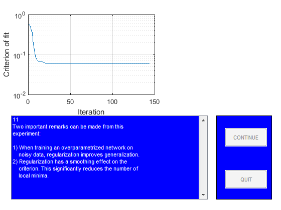

close all
StopDemo=0;
figure
guihand=gcf;
for k=1:1,
[guihand,edmulti,contbut,quitbut]=pmnshow;
set(guihand,'Name','Demonstration of regularization');
s0='1';
s1='In this demo it is shown how regularization by simple';
s2='weight decay might be of help when dealing with';
s3='overparametrization in neural networks.';
s4=[];
s5='The problem, which will be the subject of our';
s6='investigation, is to use a neural network for fitting';
s7='the underlying sine wave from the points marked';
s8='''training data.''';
smat=str2mat(s0,s1,s2,s3,s4,s5,s6,s7,s8);
load('dataSetofSpam.mat');
PHI1=trainData;
Y1=trainlabel;
PHI2=testData;
Y2=testlabel;
PHI1=PHI1';
PHI2=PHI2';
Y1=Y1';
Y2=Y2';
sub1=subplot('position',[0.1 0.55 0.38 0.38]);
plot(PHI1,Y1,'+');
set(gca,'Xlim',[min(PHI1(:)) max(PHI1(:))]);
title('Training data');
sub2=subplot('position',[0.57 0.55 0.38 0.38]);
plot(PHI2,Y2,'m+')
set(gca,'Xlim',[min(PHI2(:)) max(PHI2(:))]);
title('Test data');
drawnow
if StopDemo==1, close all, break; end
s0='2';
s1='Let''s begin by training a network with 15';
s2='hidden ''tanh'' units and one linear output unit';
s3='without using regularization.';
smat=str2mat(s0,s1,s2,s3);
NetDef = ['HHHHHHHHHHHHHHHHHHHH'
'L-------------------'];
W1 = rand(20,45);
W2 = rand(1,21);
delete(sub1);
delete(sub2);
sub1=subplot('position',[0.1 0.55 0.45 0.38]);
pmnshow(smat,guihand,edmulti,contbut,quitbut);
if StopDemo==1, close all, break; end
s0='3';
s1=[];
s2=' >> Training process in action!! <<';
s3=[];
s4=[];
s5='We run up to 500 iterations so you may have to';
s6='wait for a while!';
smat=str2mat(s0,s1,s2,s3,s4,s5,s6);
set(edmulti,'String',smat);
drawnow
trparms = settrain;
trparms = settrain(trparms,'maxiter',500);
[W1,W2,NSSEvec,iter,lambda2]=marq(NetDef,W1,W2,PHI1,Y1,trparms);
delete(gca);
subplot('position',[0.1 0.55 0.45 0.38]);
semilogy(NSSEvec);
xlabel('Iteration');
ylabel('Criterion of fit');
grid
s0='4';
s1='Next we compute training error, test error,';
s2='FPE estimate, and LOO estimate to get an idea';
s3='of how well the network fits the curve.';
smat=str2mat(s0,s1,s2,s3);
pmnshow(smat,guihand,edmulti,contbut,quitbut);
if StopDemo==1, close all, break; end
[Yhat,E,NSSE_tr] = nneval(NetDef,W1,W2,PHI1,Y1,1);
[Yhat,E,NSSE_te] = nneval(NetDef,W1,W2,PHI2,Y2,1);
FPE = fpe(NetDef,W1,W2,PHI1,Y1,trparms);
trparms2 = settrain(trparms,'maxiter',0);
ELOO= loo(NetDef,W1,W2,PHI1,Y1,trparms2);
s0='5';
s1=['Training error: ' num2str(NSSE_tr)];
s2=['Test Error: ' num2str(NSSE_te)];
s3=['FPE estimate: ' num2str(FPE)];
s4=['LOO estimate: ' num2str(ELOO)];
smat=str2mat(s0,s1,s2,s3,s4);
pmnshow(smat,guihand,edmulti,contbut,quitbut);
if StopDemo==1, close all, break; end
s0='6';
s1='This result is typical for networks having too many';
s2='weights. The superflous weights will capture';
s3='some of the noise on the training set, leading to';
s4='a poor generalization ability. This phenomenon is';
s5='usually referred to as ''overfitting''';
s6=[];
s7='Let''s try to train with a small weight decay (0.02)';
s8='and see what happens.';
smat=str2mat(s0,s1,s2,s3,s4,s5,s6,s7,s8);
pmnshow(smat,guihand,edmulti,contbut,quitbut);
if StopDemo==1, close all, break; end
s0='7';
s1=[];
s2=' >> Training process in action!! <<';
s3=[];
s4=[];
s5='We run up to 500 iterations so you may have to';
s6='wait for a while!';
smat=str2mat(s0,s1,s2,s3,s4,s5,s6);
set(edmulti,'String',smat);
drawnow
trparms = settrain(trparms,'D',0.02);
[W1,W2,NSSEvec,iter,lambda2]=marq(NetDef,W1,W2,PHI1,Y1,trparms);
delete(gca);
subplot('position',[0.1 0.55 0.45 0.38]);
semilogy(NSSEvec);
xlabel('Iteration');
ylabel('Criterion of fit');
grid
[Yhat,E,NSSE_tr2] = nneval(NetDef,W1,W2,PHI1,Y1,1);
[Yhat,E,NSSE_te2] = nneval(NetDef,W1,W2,PHI2,Y2,1);
trparms2 = settrain(trparms,'maxiter',0);
s0='8';
s1=' No regularization Regularization';
s2=['Training error: ' num2str(NSSE_tr) ' ' num2str(NSSE_tr2) ];
s3=['Test Error: ' num2str(NSSE_te) ' ' num2str(NSSE_te2)];
s6=[];
s7='It looks as if the weight decay actually improved';
s8='generalization.';
smat=str2mat(s0,s1,s2,s3,s4,s5,s6,s7,s8);
pmnshow(smat,guihand,edmulti,contbut,quitbut);
if StopDemo==1, close all, break; end
s0='9';
s1='To really proof the effect of regularization, we';
s2='redo the experiment for 50 different values of the';
s3='weight decay parameter. Also we train the network';
s4='7 times for each weight decay, using different initial';
s5='weights in order to reduce the influence from local';
s6='minima.';
smat=str2mat(s0,s1,s2,s3,s4,s5,s6);
pmnshow(smat,guihand,edmulti,contbut,quitbut);
if StopDemo==1, close all, break; end
s0='11';
s1='Two important remarks can be made from this';
s2='experiment:';
s25=[];
s3='1) When training an overparametrized network on';
s4=' noisy data, regularization improves generalization.';
s5='2) Regularization has a smoothing effect on the';
s6=' criterion. This significantly reduces the number of';
s7=' local minima.';
smat=str2mat(s0,s1,s2,s25,s3,s4,s5,s6,s7);
set(edmulti,'String',smat);
drawnow
TestatingData=PHI2;
save('TestatingData.mat','TestatingData');
save('modelEvaluation.mat','NetDef','PHI1','PHI2','W1','W2','Y1','Y2');
end
Network training started at 15.55.24
iteration # 1 W = 1.299e-01iteration # 2 W = 1.083e-01iteration # 3 W = 7.999e-02iteration # 4 W = 7.843e-02iteration # 5 W = 7.691e-02iteration # 6 W = 7.345e-02iteration # 7 W = 7.134e-02iteration # 8 W = 7.091e-02iteration # 9 W = 7.023e-02iteration # 10 W = 6.910e-02iteration # 11 W = 6.721e-02iteration # 12 W = 6.655e-02iteration # 13 W = 6.411e-02iteration # 14 W = 6.117e-02iteration # 15 W = 6.010e-02iteration # 16 W = 5.781e-02iteration # 17 W = 5.674e-02iteration # 18 W = 5.461e-02iteration # 19 W = 5.390e-02iteration # 20 W = 5.168e-02iteration # 21 W = 5.156e-02iteration # 22 W = 4.896e-02iteration # 23 W = 4.854e-02iteration # 24 W = 4.711e-02iteration # 25 W = 4.588e-02iteration # 26 W = 4.540e-02iteration # 27 W = 4.494e-02iteration # 28 W = 4.451e-02iteration # 29 W = 4.414e-02iteration # 30 W = 4.362e-02iteration # 31 W = 4.310e-02iteration # 32 W = 4.247e-02iteration # 33 W = 4.177e-02iteration # 34 W = 4.163e-02iteration # 35 W = 4.085e-02iteration # 36 W = 4.052e-02iteration # 37 W = 4.005e-02iteration # 38 W = 3.924e-02iteration # 39 W = 3.799e-02iteration # 40 W = 3.769e-02iteration # 41 W = 3.677e-02iteration # 42 W = 3.655e-02iteration # 43 W = 3.581e-02iteration # 44 W = 3.540e-02iteration # 45 W = 3.494e-02iteration # 46 W = 3.459e-02iteration # 47 W = 3.422e-02iteration # 48 W = 3.358e-02iteration # 49 W = 3.330e-02iteration # 50 W = 3.289e-02iteration # 51 W = 3.148e-02iteration # 52 W = 3.027e-02iteration # 53 W = 2.973e-02iteration # 54 W = 2.963e-02iteration # 55 W = 2.855e-02iteration # 56 W = 2.841e-02iteration # 57 W = 2.735e-02iteration # 58 W = 2.664e-02iteration # 59 W = 2.606e-02iteration # 60 W = 2.354e-02iteration # 61 W = 2.208e-02iteration # 62 W = 2.086e-02iteration # 63 W = 1.902e-02iteration # 64 W = 1.599e-02iteration # 65 W = 1.543e-02iteration # 66 W = 1.455e-02iteration # 67 W = 1.407e-02iteration # 68 W = 1.331e-02iteration # 69 W = 1.247e-02iteration # 70 W = 1.175e-02iteration # 71 W = 1.054e-02iteration # 72 W = 9.722e-03iteration # 73 W = 8.884e-03iteration # 74 W = 7.164e-03iteration # 75 W = 7.011e-03iteration # 76 W = 5.378e-03iteration # 77 W = 4.325e-03iteration # 78 W = 3.766e-03iteration # 79 W = 2.991e-03iteration # 80 W = 2.508e-03iteration # 81 W = 2.111e-03iteration # 82 W = 1.500e-03iteration # 83 W = 1.384e-03iteration # 84 W = 8.381e-04iteration # 85 W = 7.462e-04iteration # 86 W = 5.103e-04iteration # 87 W = 3.239e-04iteration # 88 W = 3.128e-04iteration # 89 W = 1.115e-04iteration # 90 W = 8.105e-05iteration # 91 W = 3.657e-05iteration # 92 W = 2.115e-05iteration # 93 W = 4.436e-06iteration # 94 W = 9.556e-07iteration # 95 W = 6.676e-08iteration # 96 W = 1.663e-09iteration # 97 W = 1.377e-11iteration # 98 W = 3.713e-14
Network training ended at 15.55.25
Network training started at 15.55.31
iteration # 1 W = 5.784e-01iteration # 2 W = 5.372e-01iteration # 3 W = 4.688e-01iteration # 4 W = 3.833e-01iteration # 5 W = 3.615e-01iteration # 6 W = 1.995e-01iteration # 7 W = 1.448e-01iteration # 8 W = 1.103e-01iteration # 9 W = 8.436e-02iteration # 10 W = 7.784e-02iteration # 11 W = 7.176e-02iteration # 12 W = 6.828e-02iteration # 13 W = 6.777e-02iteration # 14 W = 6.735e-02iteration # 15 W = 6.703e-02iteration # 16 W = 6.647e-02iteration # 17 W = 6.550e-02iteration # 18 W = 6.416e-02iteration # 19 W = 6.284e-02iteration # 20 W = 6.150e-02iteration # 21 W = 6.098e-02iteration # 22 W = 6.049e-02iteration # 23 W = 6.041e-02iteration # 24 W = 6.018e-02iteration # 25 W = 5.995e-02iteration # 26 W = 5.962e-02iteration # 27 W = 5.947e-02iteration # 28 W = 5.925e-02iteration # 29 W = 5.920e-02iteration # 30 W = 5.901e-02iteration # 31 W = 5.896e-02iteration # 32 W = 5.881e-02iteration # 33 W = 5.876e-02iteration # 34 W = 5.866e-02iteration # 35 W = 5.861e-02iteration # 36 W = 5.854e-02iteration # 37 W = 5.850e-02iteration # 38 W = 5.840e-02iteration # 39 W = 5.837e-02iteration # 40 W = 5.835e-02iteration # 41 W = 5.832e-02iteration # 42 W = 5.827e-02iteration # 43 W = 5.823e-02iteration # 44 W = 5.817e-02iteration # 45 W = 5.817e-02iteration # 46 W = 5.814e-02iteration # 47 W = 5.814e-02iteration # 48 W = 5.812e-02iteration # 49 W = 5.812e-02iteration # 50 W = 5.811e-02iteration # 51 W = 5.810e-02iteration # 52 W = 5.810e-02iteration # 53 W = 5.808e-02iteration # 54 W = 5.808e-02iteration # 55 W = 5.806e-02iteration # 56 W = 5.806e-02iteration # 57 W = 5.806e-02iteration # 58 W = 5.805e-02iteration # 59 W = 5.805e-02iteration # 60 W = 5.805e-02iteration # 61 W = 5.804e-02iteration # 62 W = 5.804e-02iteration # 63 W = 5.804e-02iteration # 64 W = 5.804e-02iteration # 65 W = 5.803e-02iteration # 66 W = 5.803e-02iteration # 67 W = 5.803e-02iteration # 68 W = 5.803e-02iteration # 69 W = 5.802e-02iteration # 70 W = 5.802e-02iteration # 71 W = 5.802e-02iteration # 72 W = 5.801e-02iteration # 73 W = 5.801e-02iteration # 74 W = 5.801e-02iteration # 75 W = 5.800e-02iteration # 76 W = 5.800e-02iteration # 77 W = 5.800e-02iteration # 78 W = 5.800e-02iteration # 79 W = 5.800e-02iteration # 80 W = 5.799e-02iteration # 81 W = 5.799e-02iteration # 82 W = 5.799e-02iteration # 83 W = 5.799e-02iteration # 84 W = 5.799e-02iteration # 85 W = 5.799e-02iteration # 86 W = 5.799e-02iteration # 87 W = 5.799e-02iteration # 88 W = 5.799e-02iteration # 89 W = 5.799e-02iteration # 90 W = 5.798e-02iteration # 91 W = 5.798e-02iteration # 92 W = 5.798e-02iteration # 93 W = 5.798e-02iteration # 94 W = 5.798e-02iteration # 95 W = 5.798e-02iteration # 96 W = 5.798e-02iteration # 97 W = 5.798e-02iteration # 98 W = 5.798e-02iteration # 99 W = 5.798e-02iteration # 100 W = 5.798e-02iteration # 101 W = 5.798e-02iteration # 102 W = 5.798e-02iteration # 103 W = 5.798e-02iteration # 104 W = 5.798e-02iteration # 105 W = 5.798e-02iteration # 106 W = 5.798e-02iteration # 107 W = 5.798e-02iteration # 108 W = 5.798e-02iteration # 109 W = 5.798e-02iteration # 110 W = 5.798e-02iteration # 111 W = 5.798e-02iteration # 112 W = 5.798e-02iteration # 113 W = 5.798e-02iteration # 114 W = 5.798e-02iteration # 115 W = 5.798e-02iteration # 116 W = 5.798e-02iteration # 117 W = 5.798e-02iteration # 118 W = 5.798e-02iteration # 119 W = 5.798e-02iteration # 120 W = 5.798e-02iteration # 121 W = 5.798e-02iteration # 122 W = 5.798e-02iteration # 123 W = 5.798e-02iteration # 124 W = 5.798e-02iteration # 125 W = 5.798e-02iteration # 126 W = 5.798e-02iteration # 127 W = 5.798e-02iteration # 128 W = 5.798e-02iteration # 129 W = 5.798e-02iteration # 130 W = 5.798e-02iteration # 131 W = 5.798e-02iteration # 132 W = 5.798e-02iteration # 133 W = 5.798e-02iteration # 134 W = 5.798e-02iteration # 135 W = 5.798e-02iteration # 136 W = 5.798e-02iteration # 137 W = 5.798e-02iteration # 138 W = 5.798e-02iteration # 139 W = 5.798e-02iteration # 140 W = 5.798e-02iteration # 141 W = 5.798e-02iteration # 142 W = 5.798e-02iteration # 143 W = 5.798e-02iteration # 144 W = 5.798e-02
Network training ended at 15.55.34
